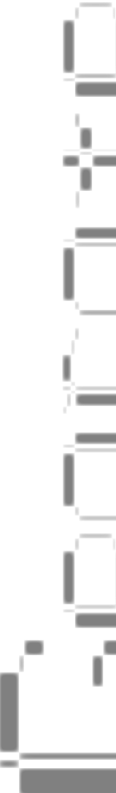
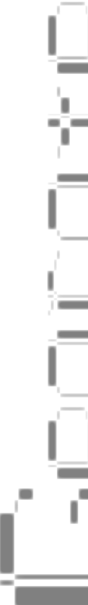

About
Gallery
POINT/
PATH/
SPACE/
INFORMATION/
Flux
Accelerate
Task switching and information overload.
15:32
Time is like sand in the hourglass, passing silently.
INCIDENT/
Keep time.
Time difference value.
Sense of time experience.
VIRTUAL SPACE/
113x22
X:45,Y:118
Time squeeze
Continuous confusion
"Not enough time"
The sense of compressed space.